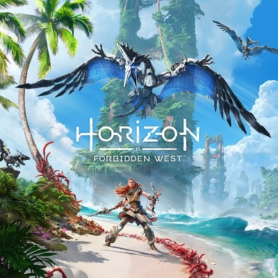
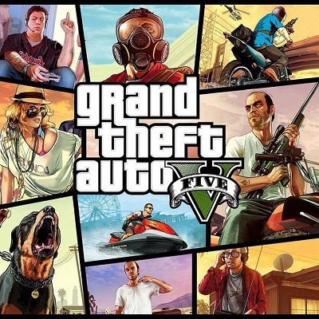
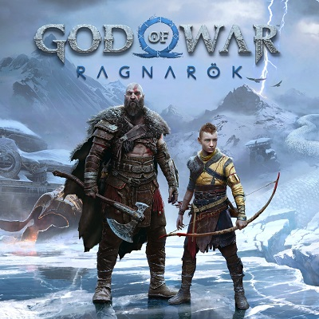

Horizon Forbidden Wests
Es un videojuego de rol de acción con elementos de aventura y mundo abierto en tercera persona.
El juego se desarrolla en un escenario post-apocalíptico, compuesto por regiones rurales, zonas montañosas, bosques y desiertos.
Los jugadores controlan una vez más a Aloy, una joven guerrera y cazadora de la tribu Nora.
Al igual que Horizon Zero Dawn, Aloy puede participar en misiones secundarias además de las principales, entre otras actividades.
Al completar las diferentes misiones, Aloy obtiene experiencia y aumenta de nivel ganando puntos de habilidad. Estos puntos pueden distribuirse en las diferentes ramas del árbol de habilidades.
Los recursos de las máquinas destruidas así como recursos de la vida natural y animal siguen siendo útiles.
Con las habilidades de combate, Aloy se vale del arco, la honda, la lanza y las trampas para combatir y eliminar a sus enemigos.
El Lanzacuerdas y la Aturdidora siguen formando parte del arsenal de Aloy, además de otras nuevas armas que se pueden comprar o conseguir.
Así mismo, se puede comerciar con mercaderes para vender y comprar armas, armaduras, entre otras cosas.
La habilidad para sabotear las máquinas y controlarlas sigue siendo útil para desplazarse mucho más rápido por el mapa.
Aloy sigue usando el Foco, un dispositivo neuronal que le permite escanear el entorno y conocer otros detalles relevantes.
También se puede usar la fogata para viajar rápido o guardar la partida.

Grand Theft Auto V
Es un videojuego de acción-aventura de mundo abierto.
En esta entrega del juego existen tres personajes, Franklin, Michael y Trevor, al principio nos van mostrando un poco de como es su vida en los santos, pero poco a poco se empiezan a conocer y a trabajar juntos.
Cada personaje tiene distintas habilidades, por ejemplo Franklin se le da bien los coches, Michael los tiroteos y Trevor pues es el mejor para pilotar aviones y cazas.
Puedes personalizar la apariencia de los personajes tanto la ropa como los diferentes peinados y barbas que te ofrece el juego, también la posibilidad de ponerles tatuajes.
Puedes mejorar las distintas habilidades para todos que son:
Resistencia, Conducción ,Habilidad especial ,Vuelo, Capacidad pulmonar, Sigilo, Tiro. <
Puedes mejorar a tu libertad todos los apartados de los tres personajes, pero en principio suelen ser mejores en un punto en cuestión.
La historia es muy entretenida y es divertida consta de 69 misiones que te harán engancharte hasta el final. En líneas generales son muy divertidas en todo su conjunto, algunas en particular son espectaculares.
Gráficamente es espectacular incluso casi 10 años después de haberse lanzado, es increíble lo que ha conseguido Rockstar con este juego y para ser de PS3 tiene su mérito todo pinta de escándalo.
La jugabilidad es muy divertida también eres libre de hacer lo que quieras sin ningún tipo de bloqueo, todo el mapa está abierto desde el comienzo.

God of War
Es un videojuego de acción-aventura.
Las armas principales de Kratos durante todo el videojuego son un hacha llamada "Leviathan" y un escudo.
El Leviathan se puede lanzar para golpear o congelar a ciertos rivales, y regresará a la mano del personaje al oprimir un botón.
Mientras que el escudo se utiliza tanto para retener y contraatacar golpes como para atacar a los enemigos durante el combate.
Esta vez los saltos y dobles saltos de Kratos son suspendidos para dejar lugar a la escalada como forma de exploración de este nuevo mundo.
Otro aspecto novedoso en la jugabilidad es la posibilidad de que Atreus pueda subir de nivel en el transcurso del juego, lo cual hará que este aprenda nuevas habilidades que ayudarán a Kratos pero este personaje no será jugable.
Atreus funcionará como una extensión de las habilidades del protagonista, y atacará a los enemigos con nuestras órdenes y al completar algunos combos.
Él puede lanzar una lluvia de flechas cuando no está directamente en combate, capaces de aturdir a los oponentes. Además se incluyen jefes opcionales y Kratos puede aumentar su salud máxima como en anteriores juegos.
Los dos protagonistas pueden cruzar lagos y ríos mediante el uso de botes.
También hay un sistema de mejoras para poder optimizar las armas, armaduras y las habilidades de los personajes.
Uno de los cambios más notorios en la jugabilidad es el de la cámara.
